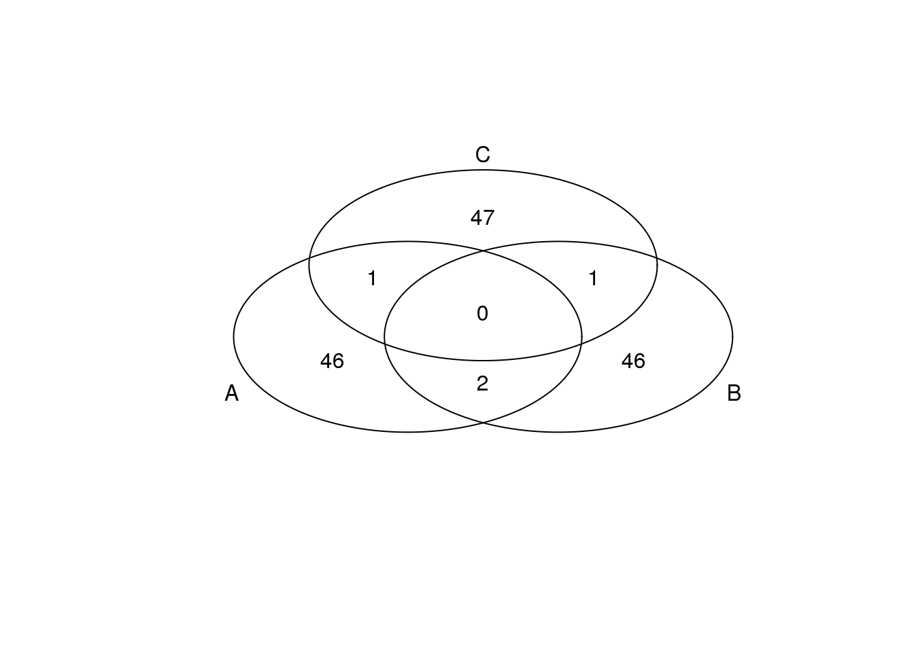
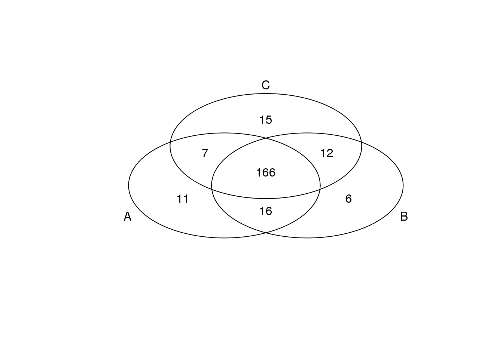
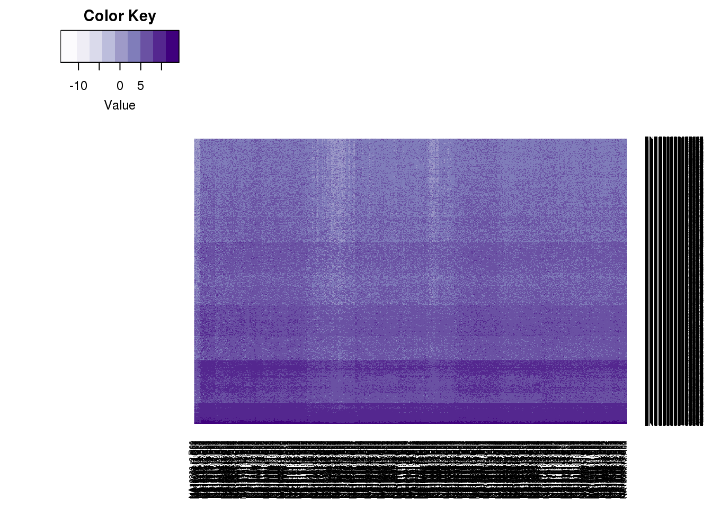
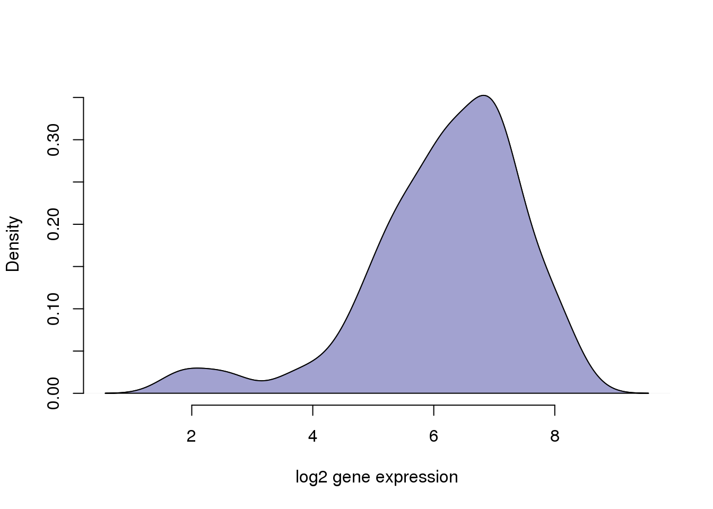
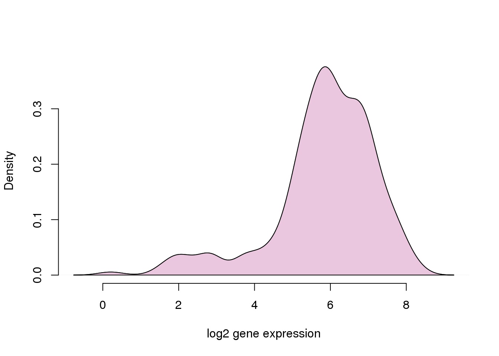
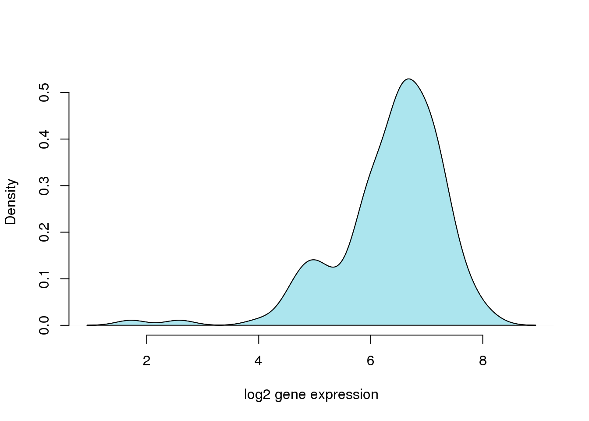

Profile individual adjusted CVs, per gene density plots
Joyce Hsiao
2015-10-29
Last updated: 2015-11-02
Code version: f451005068e895a03d350370f836e185da999881
Objective
Set up
library("data.table")
library("dplyr")
library("limma")
library("edgeR")
library("ggplot2")
library("grid")
theme_set(theme_bw(base_size = 12))
source("functions.R")Prepare data
Input annotation of only QC-filtered single cells. Remove NA19098.r2
anno_qc <- read.table("../data/annotation-filter.txt", header = TRUE,
stringsAsFactors = FALSE)
is_include <- anno_qc$batch != "NA19098.r2"
anno_qc_filter <- anno_qc[which(is_include), ]Import endogeneous gene molecule counts that are QC-filtered, CPM-normalized, ERCC-normalized, and also processed to remove unwanted variation from batch effet. ERCC genes are removed from this file.
molecules_ENSG <- read.table("../data/molecules-final.txt", header = TRUE, stringsAsFactors = FALSE)
molecules_ENSG <- molecules_ENSG[ , is_include]Input moleclule counts before log2 CPM transformation. This file is used to compute percent zero-count cells per sample.
molecules_sparse <- read.table("../data/molecules-filter.txt", header = TRUE, stringsAsFactors = FALSE)
molecules_sparse <- molecules_sparse[grep("ENSG", rownames(molecules_sparse)), ]
stopifnot( all.equal(rownames(molecules_ENSG), rownames(molecules_sparse)) )Compute normalized CV
We compute squared CV across cells for each individual and then for each individual CV profile, account for mean dependency by computing distance with respect to the data-wide coefficient variation on the log10 scale.
source("../code/cv-functions.r")
ENSG_cv <- compute_cv(log2counts = molecules_ENSG,
grouping_vector = anno_qc_filter$individual)
ENSG_cv_adj <- normalize_cv(group_cv = ENSG_cv,
log2counts = molecules_ENSG,
anno = anno_qc_filter)Extreme genes as in top/bottom 50
extreme_genes_50 <- lapply(ENSG_cv_adj, function(xx) {
low_mean <- rank(xx$mean) < 50
high_mean <- rank(xx$mean) > (length(xx$mean) - 50)
low_cv <- rank(xx$log10cv2_adj) < 50
high_cv <- rank(xx$log10cv2_adj) > (length(xx$log10cv2_adj) - 50)
res <- data.frame(high_mean = high_mean,
low_mean = low_mean,
high_cv = high_cv,
low_cv = low_cv)
rownames(res) <- rownames(ENSG_cv_adj[[1]])
res
})*Top 50 in adjusted CV
genes <- rownames(extreme_genes_50[[1]])
library(gplots)
venn( list(genes[extreme_genes_50[[1]]$high_cv],
genes[extreme_genes_50[[2]]$high_cv],
genes[extreme_genes_50[[3]]$high_cv] ) )*Bottom 50 in adjusted CV
genes <- rownames(extreme_genes_50[[1]])
library(gplots)
venn( list(genes[extreme_genes_50[[1]]$low_cv],
genes[extreme_genes_50[[2]]$low_cv],
genes[extreme_genes_50[[3]]$low_cv] ) )
*Top 50 in mean
genes <- rownames(extreme_genes_50[[1]])
library(gplots)
venn( list(genes[extreme_genes_50[[1]]$high_mean],
genes[extreme_genes_50[[2]]$high_mean],
genes[extreme_genes_50[[3]]$high_mean] ) )
*Bottom 50 in mean
genes <- rownames(extreme_genes_50[[1]])
library(gplots)
venn( list(genes[extreme_genes_50[[1]]$low_mean],
genes[extreme_genes_50[[2]]$low_mean],
genes[extreme_genes_50[[3]]$low_mean] ) )
Extreme genes as in top/bottom 200
extreme_genes_200 <- lapply(ENSG_cv_adj, function(xx) {
low_mean <- rank(xx$mean) < 200
high_mean <- rank(xx$mean) > (length(xx$mean) - 200)
low_cv <- rank(xx$log10cv2_adj) < 200
high_cv <- rank(xx$log10cv2_adj) > (length(xx$log10cv2_adj) - 200)
res <- data.frame(high_mean = high_mean,
low_mean = low_mean,
high_cv = high_cv,
low_cv = low_cv)
rownames(res) <- rownames(ENSG_cv_adj[[1]])
res
})*Top 200 in adjusted CV
genes <- rownames(extreme_genes_200[[1]])
library(gplots)
venn( list(genes[extreme_genes_200[[1]]$high_cv],
genes[extreme_genes_200[[2]]$high_cv],
genes[extreme_genes_200[[3]]$high_cv] ) )
*Bottom 200 in adjusted CV
genes <- rownames(extreme_genes_200[[1]])
library(gplots)
venn( list(genes[extreme_genes_200[[1]]$low_cv],
genes[extreme_genes_200[[2]]$low_cv],
genes[extreme_genes_200[[3]]$low_cv] ) )
*Top 200 in mean
genes <- rownames(extreme_genes_200[[1]])
library(gplots)
venn( list(genes[extreme_genes_200[[1]]$high_mean],
genes[extreme_genes_200[[2]]$high_mean],
genes[extreme_genes_200[[3]]$high_mean] ) )
Per gene plots
library(RColorBrewer)
library(gplots)
heatmap.2(as.matrix(molecules_ENSG),
col = cols <- brewer.pal(9,"Purples"),
trace = "none", density.info = "none",
dendrogram = "none")
library(broman)
crayon <- brocolors("crayon")
gene <- rownames(molecules_ENSG)[which(extreme_genes_50[[1]]$low_cv)[5]]
dens <- density( unlist(molecules_ENSG[ rownames(molecules_ENSG) == gene,
anno_qc_filter$individual == "NA19101"]))
plot(dens,
xlab = "log2 gene expression", main = "",
ylab = "Density", axes = F)
polygon(dens, col = crayon["Blue Bell"])
title()
axis(1); axis(2)
dens <- density( unlist(molecules_ENSG[ rownames(molecules_ENSG) == gene,
anno_qc_filter$individual == "NA19239"]))
plot(dens,
xlab = "log2 gene expression", main = "",
ylab = "Density", axes = F)
polygon(dens, col = crayon["Thistle"])
title()
axis(1); axis(2)
dens <- density( unlist(molecules_ENSG[ rownames(molecules_ENSG) == gene,
anno_qc_filter$individual == "NA19098"]))
plot(dens,
xlab = "log2 gene expression", main = "",
ylab = "Density", axes = F)
polygon(dens, col = crayon["Blizzard Blue"])
title()
axis(1); axis(2)
Session information
sessionInfo()R version 3.2.0 (2015-04-16)
Platform: x86_64-unknown-linux-gnu (64-bit)
locale:
[1] LC_CTYPE=en_US.UTF-8 LC_NUMERIC=C
[3] LC_TIME=en_US.UTF-8 LC_COLLATE=en_US.UTF-8
[5] LC_MONETARY=en_US.UTF-8 LC_MESSAGES=en_US.UTF-8
[7] LC_PAPER=en_US.UTF-8 LC_NAME=C
[9] LC_ADDRESS=C LC_TELEPHONE=C
[11] LC_MEASUREMENT=en_US.UTF-8 LC_IDENTIFICATION=C
attached base packages:
[1] grid stats graphics grDevices utils datasets methods
[8] base
other attached packages:
[1] broman_0.59-5 RColorBrewer_1.1-2 gplots_2.17.0
[4] zoo_1.7-12 ggplot2_1.0.1 edgeR_3.10.2
[7] limma_3.24.9 dplyr_0.4.2 data.table_1.9.4
[10] knitr_1.10.5
loaded via a namespace (and not attached):
[1] Rcpp_0.12.0 formatR_1.2 plyr_1.8.3
[4] bitops_1.0-6 tools_3.2.0 digest_0.6.8
[7] evaluate_0.7 gtable_0.1.2 lattice_0.20-31
[10] DBI_0.3.1 yaml_2.1.13 parallel_3.2.0
[13] proto_0.3-10 httr_0.6.1 stringr_1.0.0
[16] gtools_3.5.0 caTools_1.17.1 R6_2.1.1
[19] rmarkdown_0.6.1 gdata_2.16.1 reshape2_1.4.1
[22] magrittr_1.5 scales_0.2.4 htmltools_0.2.6
[25] MASS_7.3-40 assertthat_0.1 colorspace_1.2-6
[28] KernSmooth_2.23-14 stringi_0.4-1 RCurl_1.95-4.6
[31] munsell_0.4.2 chron_2.3-45